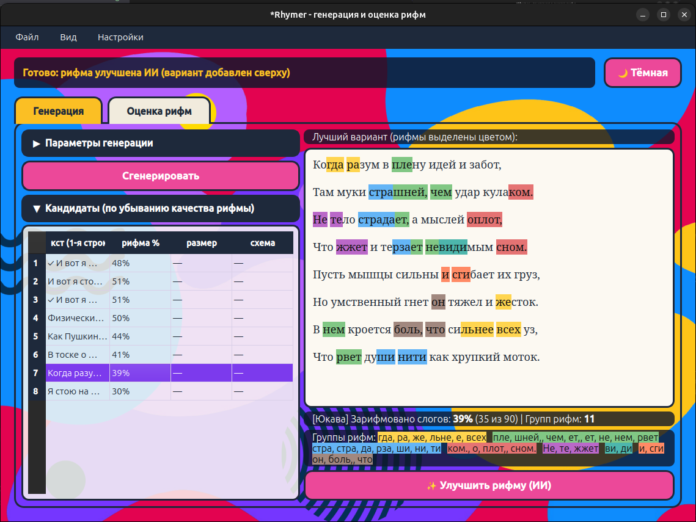
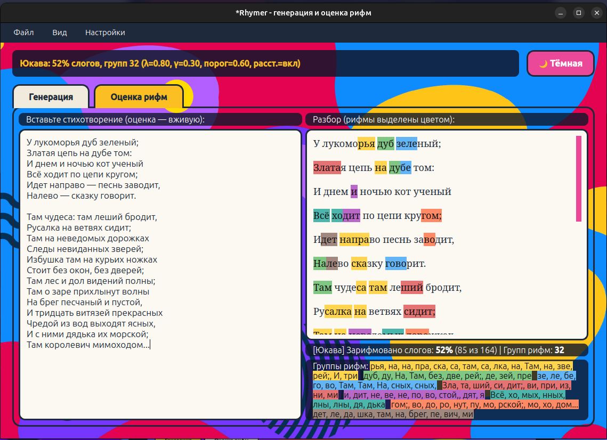

Генерация стихов и оценка рифмы
Десктоп-приложение для русской поэзии: пишет стихи и само оценивает качество рифмы алгоритмом "Юкава".
Linux x86_64
Распакуйте архив и запустите ./Rhymer/Rhymer. Размер ~140 МБ; требования: x86_64, glibc (Ubuntu 20.04+).
Что умеет
- Генерирует стихи по теме, размеру и схеме рифмовки (best-of-N через ИИ).
- Оценивает рифму своим алгоритмом "Юкава": граф слогов, процент зарифмованных слогов, группы рифм.
- Улучшает стих: подсвечивает слабые окончания и переписывает плохие рифмы через ИИ.
Ключ ИИ вводится в разделе "Настройки"; без ключа работает офлайн-режим - оценка рифмы считается локально.
ИИ генерирует -> Юкава оценивает -> ИИ переписывает слабые рифмы
Как выглядит

